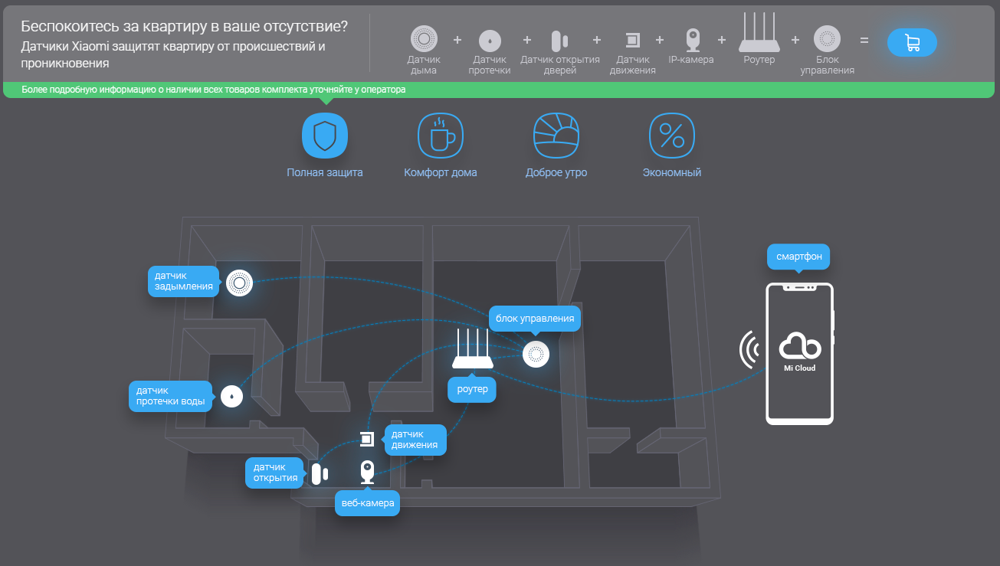

Интернет магазин системы умный дом
Система умный дом

Xiaomi «Умный дом» — автоматизированная система, позволяющая с легкостью управлять бытовой техникой,
она создаст уют в доме, облегчит жизнь потребителя во многих аспектах.
Подробное описание товара.
Комплект умного дома Xiaomi Smart Home оснащен следующими элементами:
- Датчик, работа которого заключается в обработке информации и передачи ее в сеть;
- Датчик, фиксирующий движения. Настроив элемент, пользователь может использовать подсветку комнаты в любое удобное время;
- Датчик, предназначенный для монтажа на дверь или окно;
- Беспроводной дверной звонок.
- Набор датчиков Xiaomi для «умного дома» может работать в сочетании с другими элементами системы, например, лампами, розетками и прочее.
- Комплект прост в использовании, а для его установки не потребуется привлечение специалиста.
©Все права защищены, 2018.